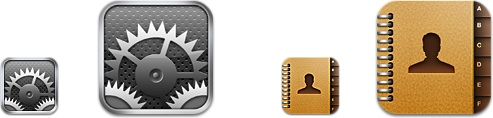
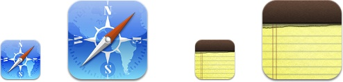
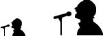
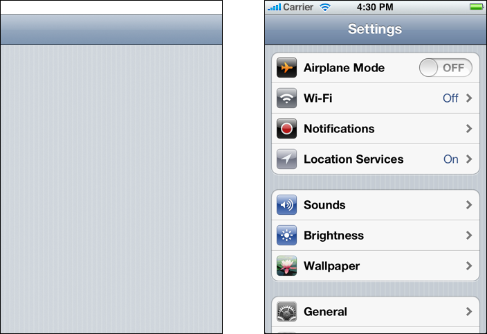
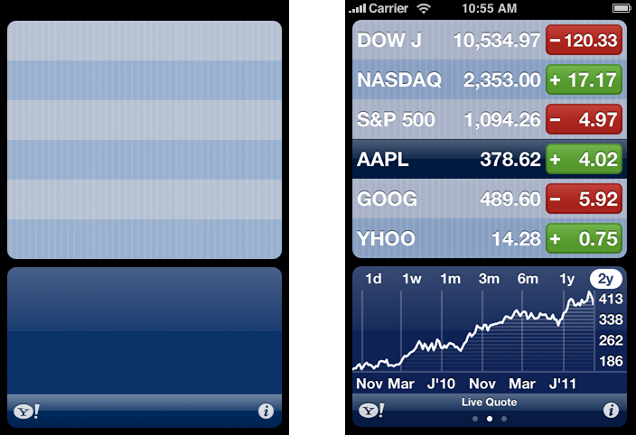
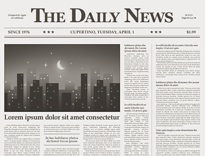
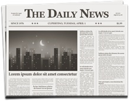

Custom Icon and Image Creation Guidelines
Every app needs an app icon and a launch image. It’s recommended that apps also provide an icon for iOS to display in Spotlight search results and—if necessary—in Settings. In addition, some apps need custom icons to represent app-specific content, functions, or modes in navigation bars, toolbars, and tab bars.
Unlike other custom artwork in your app, these icons and images must meet specific criteria so that iOS can display them properly. In addition, some icon and image files have naming requirements. Table 8-1 contains information about these icons and images and provides links to specific guidelines for creating them. To learn how to name these files and specify them in your code, see “App Icons” in iOS App Programming Guide and “App Launch (Default) Images” in iOS App Programming Guide.
You can customize many UI elements by supplying a resizable image for the element’s background. To learn how to create a resizable image that looks good and performs well, see “Tips for Creating Resizable Images.”
Description | Size for iPhone 5 and iPod touch (5th generation) | Size for high-resolution iPhone and iPod touch | Size for iPhone and iPod touch | Size for high-resolution iPad | Size for iPad | Guidelines |
|---|---|---|---|---|---|---|
App icon (required for all apps) | 114 x 114 | 114 x 114 | 57 x 57 | 144 x 144 | 72 x 72 | |
App icon for the App Store (required for all apps) | 1024 x 1024 | 1024 x 1024 | 512 x 512 | 1024 x 1024 | 512 x 512 | |
Launch image (required for all apps) | 640 x 1136 | 640 x 960 | 320 x 480 | 1536 x 2008 (portrait) 2048 x 1496 (landscape) | 768 x 1004 (portrait) 1024 x 748 (landscape) | |
Small icon for Spotlight search results and Settings (recommended) | 58 x 58 | 58 x 58 | 29 x 29 | 100 x 100 (Spotlight search results) 58 x 58 (Settings) | 50 x 50 (Spotlight search results) 29 x 29 (Settings) | |
Web clip icon (recommended for web apps and websites) | 114 x 114 | 114 x 114 | 57 x 57 | 144 x 144 | 72 x 72 | |
Toolbar and navigation bar icon (optional) | Approximately 40 x 40 | Approximately 40 x 40 | Approximately 20 x 20 | Approximately 40 x 40 | Approximately 20 x 20 | |
Tab bar icon (optional) | About 60 x 60 (96 x 64 maximum) | About 60 x 60 (96 x 64 maximum) | About 30 x 30 (48 x 32 maximum) | About 60 x 60 (96 x 64 maximum) | About 30 x 30 (48 x 32 maximum) | |
Default Newsstand cover icon for the App Store (required for Newsstand apps) | At least 1024 pixels on the longest edge | At least 1024 pixels on the longest edge | At least 512 pixels on the longest edge | At least 1024 pixels on the longest edge | At least 512 pixels on the longest edge |
Tips for Designing Great Icons and Images
Beautiful, compelling icons and images are a fundamental part of the iOS user experience. Far from being merely decorative, the icons and images in your app play an essential role in communicating with users.
For the best results, enlist the help of a professional graphic designer. An experienced graphic designer can help you develop an overall visual style for your app and apply that style to all the icons and images in it.
Use universal imagery that people will easily recognize. Avoid focusing on a secondary or obscure aspect of an element.
Embrace simplicity. In particular, avoid cramming lots of different images into your icon. Try to use a single object that expresses the essence of your app. Start with a basic shape and add details cautiously. If an icon’s content or shape is overly complex, the details can become confusing and may appear muddy at smaller sizes.
Use color and shadow judiciously to help the icon tell its story. Don’t add color just to make the icon more colorful. Also, smooth gradients typically work better than sharp delineations of color.
In general, avoid using “greek” text or wavy lines to suggest text. If you want to show text in your icon, but you don’t want to draw attention to the words themselves, start with actual text and make it hard to read by shrinking it or doubling the layers.
In general, create an idealized version of the subject rather than using a photo. Although it can be appropriate to use a photo (or a screenshot) in an app icon, it’s often better to augment reality in an artistic way. Creating an enhanced version can help you emphasize the aspects of the subject that you want users to notice.
If your app has a very recognizable UI, consider creating a refined representation of it, instead of using an actual screenshot of your software in the app icon. Creating an enhanced version of the UI is particularly important when users could confuse a large version of the icon with the actual interface of the app.
Avoid using iOS interface elements in your artwork. You don’t want users to confuse your icons or images with the iOS UI.
Don’t use replicas of Apple hardware products in your artwork. The symbols that represent Apple products are copyrighted and cannot be reproduced in your icons or images. In general, it’s a good idea to avoid replicas of any specific devices in your artwork, because these designs change frequently and icons or images that are based on them can look dated.
Don’t reuse iOS app icons in your interface. It can be confusing to users to see the same icon used to mean slightly different things in multiple locations throughout the system.
Portray real substances accurately. Icons that represent real objects should also look as though they are made of real materials and have real mass. Realistic icons accurately replicate the characteristics of substances such as fabric, glass, paper, and metal, and convey an object’s weight and feel.
Use transparency when it makes sense. Transparency in an image can help depict glass or plastic, but it can be tricky to use convincingly. You should not use transparency in your app icon.
Tips for Creating Great Artwork for the Retina Display
The Retina display allows you to display high-resolution versions of your art and icons. If you merely scale up your existing artwork, you miss out on the opportunity to provide the beautiful, captivating images users expect. Instead, you should rework your existing image resources to create large, higher quality versions that are:
Richer in texture. For example, in the high-resolution versions of the Settings and Contacts icons, the metal and paper textures are clearly visible.

More detailed. For example, in the high-resolution versions of the Safari and Notes icons, you can see details such as the accurate contours of the continents behind the compass and the torn paper left by the previous note.

More realistic. For example, the high-resolution versions of the Compass and Photos icons combine rich texture and fine details to create realistic portrayals of a compass and a photograph.
Even though bar icons are simpler than app or document icons, you should consider adding details as you create high-resolution versions of them. For example, the artists tab bar icon in the Music app is a streamlined silhouette of a singer. The high-resolution version of this icon is recognizably the same icon, but includes greater detail.

The following techniques can help you get great results as you create a high-resolution version of your artwork.
Start by scaling up your original artwork and then redraw it. Beginning this way lets you to preserve the original layout of your design. In most cases, you can use the “nearest neighbor” scaling algorithm to scale your artwork to 200%. This works well if the original artwork was not created with vector shapes and does not include layer effects. The result is a large, pixelated image on top of which you can draw matching high-resolution art.
Add detail and depth. Don’t hesitate to draw very small elements, because the high-resolution version of your artwork allows much more room for fine details. For example, a 1-pixel dot in your original image becomes a 4-pixel dot (that is, 2 x 2 pixels) in the larger version.
Consider softening scaled-up elements. If, for example, you have a sharp, 1-pixel dividing line in your original artwork, it might have the boldness you want when you leave it scaled up to a 2-pixel line. But for some lines and elements, you might want to soften the scaled results by feathering or even leaving the element at the smaller size.
Consider adding blur for better results in effects such as engravings and drop shadows. For example, text engraving is typically done by shifting a duplicate image of the text by 1 pixel. Scaled up, this shift would result in an engraving width of 2 pixels, which is likely to look very sharp and unrealistic at a higher resolution. To improve this, you can leave the shift as-is (that is, at 1 pixel), but add a 1-pixel blur to soften the engraving. This still results in a 2-pixel wide engraving effect, but the outer pixel now looks more like it is only half a pixel wide, which results in a better sense of dimensionality.
Tips for Creating Resizable Images
You can create a resizable image to customize the background of several standard UI elements, such as popovers, buttons, navigation bars, tab bars, and toolbars (including the items on these bars). Providing resizable images for these elements can result in better app performance.
For many UI elements, you can also specify end caps in addition to a background appearance. An end cap defines an area of the image that should not be resized. For example, you might create a resizable image that includes four end caps that define the four corners of a button. When the image is resized to fill the button’s background area, the portions defined by the end caps are drawn unchanged.
Depending on the dimensions of the resizable image you supply, iOS either stretches or tiles it as appropriate to fill a UI element’s background area. To stretch an image means to scale up the image, without regard for its original aspect ratio. Stretching is performant, but it isn’t usually desirable for a multipixel image that can distort. To tile an image is to repeat the original image as many times as necessary to fill the target area. Tiling is less performant than stretching, but it's the only way to achieve a textured or patterned effect.
As a general rule, you should supply the smallest image (excluding end caps) that will result in the look you want. For example:
If you want a solid color with no gradient, create a 1 x 1 pixel image.
If you want a vertical gradient, create an image that has a width of 1 pixel and a height that matches the height of the UI element’s background.
If you want to provide a repeating textured appearance, you need to create an image with dimensions that match the dimensions of the repeating portion of the texture.
If you want to provide a nonrepeating textured appearance, you need to create a static image with dimensions that match the dimensions of the UI element’s background area.
App Icons
An app icon is an icon users put on their Home screens and tap to start an app. This is a place where branding and strong visual design should come together into a compact, instantly recognizable, attractive package. Every app needs an app icon.
With the exception of the App Store icon—which must be named iTunesArtwork—you can name your app icon anything you want. As long as you use the CFBundleIcons key to declare the names and you add the @2x suffix to the names of all high-resolution icons, iOS chooses an icon based on whether its size is appropriate for the intended usage. To learn more about icon naming, see “App Icons” in iOS App Programming Guide.
Try to balance eye appeal and clarity of meaning in your icon so that it’s rich and beautiful and clearly conveys the essence of your app’s purpose. Also, it’s a good idea to investigate how your choice of image and color might be interpreted by people from different cultures.
Create different sizes of your app icon for different devices. If you’re creating a universal app, you need to supply app icons in all four sizes.
For iPhone and iPod touch both of these sizes are required:
57 x 57 pixels
114 x 114 pixels (high resolution)
For iPad, both of these sizes are required:
72 x 72 pixels
144 x 144 (high resolution)
When iOS displays your app icon on the Home screen of a device, it automatically adds the following visual effects:
Rounded corners
Drop shadow
Reflective shine (unless you prevent the shine effect)
For example, a simple 57 x 57 pixel iPhone app icon might look like this:
When it’s displayed on an iPhone Home screen, iOS adds rounded corners, a drop shadow, and a reflected shine. So the same app icon would look like this:
Ensure that your icon is eligible for the visual enhancements iOS provides. You should provide an image that:
Has 90° corners (it’s important to avoid cropping the corners of your icon—iOS does that for you when it applies the corner-rounding mask)
Does not include a drop shadow
Does not have any shine or gloss (unless you’ve chosen to prevent the addition of the reflective shine)
Does not use alpha transparency
Give your app icon a discernible background. Icons with visible backgrounds look best on the Home screen primarily because of the rounded corners iOS adds. This is because uniformly rounded corners ensure that all the icons on a user's Home screen have a consistent appearance that invites tapping. If you create an icon with a background that disappears when it's viewed on the Home screen, users don't see the rounded corners. Such icons often don't look tappable and tend to interfere with the orderly symmetry of the Home screen that users appreciate.
Be sure your image completely fills the required area. If your image boundaries are smaller than the recommended sizes, or you use transparency to create “see-through” areas within them, your icon can appear to float on a black background with rounded corners.
For example, an app might supply an icon on a transparent background, like the blue star on the far left. When iOS displays this icon on a Home screen, it looks like the image in the middle (if no shine is added) or it looks like the image on the right (if shine is added).
An icon that appears to float on a visible black background looks especially unattractive on a Home screen that displays a custom picture.
Create a large version of your app icon for display in the App Store. Although it’s important that this version be instantly recognizable as your app icon, it can be subtly richer and more detailed. There are no visual effects added to this version of your app icon.
For the App Store, create a large version of your app icon in two sizes so that it looks good on all devices:
512 x 512 pixels
1024 x 1024 pixels (high resolution)
Be sure to name this version of your app icon iTunesArtwork and iTunesArtwork@2x, respectively.
If you’re developing an app for ad-hoc distribution (that is, to be distributed in-house only, not through the App Store), you must also provide the large versions of your app icon. This icon identifies your app in iTunes.
iOS might also use the large image in other ways. In an iPad app, for example, iOS uses the large image to generate the large document icon.
Launch Images
To enhance the user’s experience at app launch, you must provide at least one launch image. A launch image looks very similar to the first screen your app displays. iOS displays this image instantly when the user starts your app and until the app is fully ready to use. As soon as your app is ready for use, your app displays its first screen, replacing the launch placeholder image.
Because iOS lets you supply different launch images for different usages you give each image a name that specifies how it should be used. The format of the launch image filename includes modifiers you use to specify the device, resolution, and orientation of the image. To learn how to name launch images appropriately, see “App Launch (Default) Images” in iOS App Programming Guide.
Supply a launch image to improve user experience.
Avoid using your launch image as an opportunity to provide:
An “app entry experience,” such as a splash screen
An About window
Branding elements, unless they are a static part of your app’s first screen
Because users are likely to switch among apps frequently, you should make every effort to cut launch time to a minimum, and you should design a launch image that downplays the experience rather than drawing attention to it.
Generally, design a launch image that is identical to the first screen of the app.
Exceptions:
Text. The launch image is static, so any text you display in it will not be localized.
UI elements that might change. Avoid including elements that might look different when the app finishes launching, so that users don’t experience a flash between the launch image and the first app screen.
For iPhone and iPod touch launch images, include the status bar region. Create launch images of the following sizes.
For standard iPhone and iPod touch devices:
320 x 480 pixels
640 x 960 pixels (high resolution)
For iPhone 5 and iPod touch (5th generation):
640 x 1136 pixels
For iPad launch images, do not include the status bar region. Create launch images of these sizes (most iPad apps should supply a launch image for each orientation):
For portrait:
768 x 1004 pixels
1536 x 2008 pixels (high resolution)
For landscape:
1024 x 748 pixels
2048 x 1496 pixels (high resolution)
If you think that following these guidelines will result in a plain, boring launch image, you’re right. Remember, the launch image is not meant to provide an opportunity for artistic expression; it is solely intended to enhance the user’s perception of your app as quick to launch and immediately ready for use. The following examples show you how plain a launch image can be.
The Settings launch image—shown below, to the left of the first app screen—displays only the background of the app, because no other content in the app is guaranteed to be static.

In the launch image for iPhone Stocks—shown below, to the left of the first app screen—only static images are included because these images are always visible in the first app view of the Stocks app.

Small Icons
Every app should supply a small icon that iOS can display when the app name matches a term in a Spotlight search. Apps that supply settings should also supply this icon to identify them in the built-in Settings app.
This icon should clearly identify your app so that people can recognize it in a list of search results or in Settings.
You can name your icon anything you want as long as you use the CFBundleIcons key to declare the names and you add the @2x suffix to the names of all high-resolution icons. You can use custom names because iOS chooses an icon based on whether its size is appropriate for the intended usage. To learn more about icon naming, see “App Icons” in iOS App Programming Guide.
For iPhone and iPod touch, iOS uses the same icon for both Spotlight search results and Settings. If you do not provide this icon, iOS might shrink your app icon for display in search results and in Settings. For your iPhone app, create two small icons that measure:
29 x 29 pixels
58 x 58 pixels (high resolution)
For iPad, you supply separate icons for Settings and Spotlight search results. For Settings on iPad, create two icons that measure:
29 x 29 pixels
58 x 58 pixels (high resolution)
For Spotlight search results on iPad, create two icons that measure:
50 x 50 pixels
100 x 100 pixels (high resolution)
Note that the final visual size of a Spotlight search results icon on iPad is 48 x 48 pixels (96 x 96 pixels in high resolution). iOS trims 1 pixel (or 2 pixels, for high resolution) from each side of your artwork and adds a drop shadow. Be sure to take this into account as you design your icon for Spotlight search results.
Document Icons
If your iOS app creates documents of a custom type, you want users to be able to recognize these documents at a glance. You don't need to design a custom icon for this purpose because iOS uses your app icon to create document icons for you.
For example, a default document icon that uses the 57 x 57 pixel white star iPhone app icon would look like this:
A high-resolution default document icon that uses the 114 x 114 pixel white star iPhone app icon would look like this:
On iPad, a default document icon that uses the 72 x 72 pixel white star app icon would look like this:
Web Clip Icons
If you have a web app or a website, you can provide a custom icon that users can display on their Home screens using the web clip feature. Users tap the icon to reach your web content in one easy step. You can create an icon that represents your website as a whole or an icon that represents a single webpage.
If your web content is distinguished by a familiar image or recognizable color scheme, it makes sense to incorporate it in your icon. However, to ensure that your icon looks great on the device, you should also follow the guidelines in this section. (To learn how to add code to your web content to provide a custom icon, see Safari Web Content Guide.)
For iPhone and iPod touch, create icons that measure:
57 x 57 pixels
114 x 114 pixels (high resolution)
For iPad, create icons that measure:
72 x 72 pixels
144 x 144 (high resolution)
As it does with app icons, iOS automatically adds some visual effects to your icon so that it coordinates with the built-in icons on the Home screen. Specifically, iOS adds:
Rounded corners
Drop shadow
Reflective shine
For example, a simple 57 x 57 pixel webpage icon might look like this:
When your 57 x 57 pixel icon is displayed on an iPhone Home screen, iOS makes the icon look like this:
Ensure your icon is eligible for the visual enhancements iOS adds (if you want them). You should produce an image in PNG format that:
Has 90° corners
Does not have any shine or gloss
Icons for Navigation Bars, Toolbars, and Tab Bars
As much as possible, you should use the system-provided buttons and icons to represent standard tasks in your app. For a complete list of standard buttons and icons, and guidelines on how to use them, see “System-Provided Buttons and Icons.”
Of course, not every task your app performs is a standard one. If your app supports custom tasks users need to perform frequently, you need to create custom icons that represent these tasks in your toolbar or navigation bar. Similarly, if your app displays a tab bar that allows users to switch among custom app modes or custom subsets of data, you need to design tab bar icons that represent these modes or subsets.
Before you create the art for your icon, you need to spend some time thinking about what it should convey. As you consider designs, aim for an icon that is:
Simple and streamlined. Too many details can make an icon appear sloppy or indecipherable.
Not easily mistaken for one of the system-provided icons. Users should be able to distinguish your custom icon from the standard icons at a glance.
Readily understood and widely acceptable. Strive to create a symbol that most users will interpret correctly and that no users will find offensive.
A custom icon that you provide for a toolbar, navigation bar, or tab bar is also known as a template image, because iOS uses it as a mask to create the icon you see in your app. It is not necessary to create a full-color template image.
After you’ve decided on the appearance of your icon, follow these guidelines as you create it:
Use pure white with appropriate alpha transparency.
Do not include a drop shadow.
Use anti-aliasing.
If you decide to add a bevel, be sure that it is 90° (to help you do this, imagine a light source positioned at the top of the icon).
For toolbar and navigation bar icons on iPhone, iPod touch, and iPad, create an icon in the following sizes:
About 20 x 20 pixels
About 40 x 40 pixels (high resolution)
For tab bar icons on iPhone, iPod touch, and iPad, create an icon in the following sizes:
About 30 x 30 pixels (48 x 32 pixels maximum)
About 60 x 60 pixels (96 x 64 pixels maximum) for high resolution
Don’t include text in a custom tab bar icon. Instead, use the tab bar item APIs to set the title for each tab (for example, initWithTitle:image:tag:). If you need to adjust the automatic layout of the title, you can use the title adjustment APIs (such as setTitlePositionAdjustment:).
If necessary, include custom pressed or selected appearances for your icons. iOS automatically provides these appearances for items in navigation bars, toolbars, and tab bars, even when you specify a tint for the bar. However, you can supply custom appearances if the default treatment doesn’t look good with your custom icons or bar background.
Give all icons in a bar a similar visual weight. Aim to balance the overall size, level of detail, and use of solid regions across all icons that can appear in a specific bar. In general, it doesn’t look good to combine in the same bar icons that are large and blocky, and completely filled, with icons that are small, detailed, and unfilled.
Newsstand Icons
If your app uses Newsstand Kit to publish subscription-based periodical content, you need to provide icons for display in the App Store and on people’s devices. Follow the guidelines in this section to ensure that your icons look good on all iOS devices and in all contexts.
All Newsstand apps need to supply a Newsstand cover icon that represents the default cover art in the App Store. The long edge of this icon should measure at least 512 pixels (1024 pixels for high-resolution devices). Note that this icon is separate from the app icon that all iOS apps must provide.
Your default Newsstand cover icon should be a generalized facsimile of the cover of a typical issue, which focuses on the parts of the cover that are fairly consistent from issue to issue. For example:
Avoid adding to your default cover icon elements that users would never see on an actual cover, such as a message to “tap here for the latest issue”.
Avoid using artwork or headlines that are seasonal or topical, such as images related to holidays or headlines that refer to current events.
In particular, don’t reuse the cover of a previous issue for your default Newsstand cover icon, because users might confuse your app with a specific issue.
In addition to the default Newsstand cover icon, you also need to supply a separate icon that accurately represents each new issue so that it can appear on the Newsstand shelf and in the multitasking bar on an iOS device. Unlike the default cover icon, each per-issue icon should display details about the contents of a specific issue.
It’s recommended that you create a single large icon for each issue, and allow iOS to scale it for display in both places (the icon displayed on the Newsstand shelf is larger than the icon displayed in the multitasking bar). Depending on the precise location of an issue on a Newsstand shelf, iOS might also add perspective to the icon so that it matches the realistic look of the shelf.
Specifically, you should create a per-issue icon whose long edge measures at least 512 pixels (1024 pixels for high-resolution devices). To display the current issue’s icon on the Newsstand shelf and in the multitasking bar, iOS scales your large icon to the following sizes:
Device | Scaled long-edge size (Newsstand shelf) | Scaled long-edge size (multitasking bar) |
|---|---|---|
iPhone and iPod touch | 90 pixels (180 pixels for high resolution) | 57 pixels (114 pixels for high resolution) |
iPad | 126 pixels (252 pixels for high resolution) | 72 pixels (144 pixels for high resolution) |
In addition to providing icons, you use keys in your app’s Info.plist file to define how the icons should appear on iOS devices. First, you use the binding type key to indicate whether your content is a magazine or a newspaper. Then, you use the binding edge key to specify the visual enhancements that iOS should add to the icon, such as the fold at the bottom edge of a standard newspaper. For more information about these keys and their values, see “Contents of the UINewsstandIcon Dictionary” in Information Property List Key Reference.
When you specify the magazine binding type, iOS adds the appearance of multiple pages and a shadow that suggests thickness. You must also specify a left or right binding edge for a magazine icon, to indicate the edge that should receive the stapled binding appearance.
For example, suppose that you supply a per-issue icon similar to this:
If you specify the left binding edge, iOS adds the stapled binding appearance to the left edge and the multiple-page appearance to the right edge.
When you specify the newspaper binding type, iOS adds the appearance of additional copies of the paper that are stacked beneath the current issue.
If your newspaper is standard size, you can specify a bottom binding edge to give your icon the appearance of a fold at its bottom edge. If your newspaper is tabloid-size (that is, approximately half the size of a broadsheet), you can specify left, right, or no binding edge to avoid the addition of the fold appearance.
For example, suppose that your per-issue newspaper icon looks similar to this:

If you specify the bottom binding edge, iOS adds the appearance of a fold to the bottom edge. (iOS adds the stacked-paper appearance regardless of the value you supply for the binding edge key.)

For additional information about setting up a Newsstand app, see iTunes Connect Developer Guide.
Copyright © 2013 Apple Inc. All Rights Reserved. Terms of Use | Privacy Policy | Updated: 2013-05-01